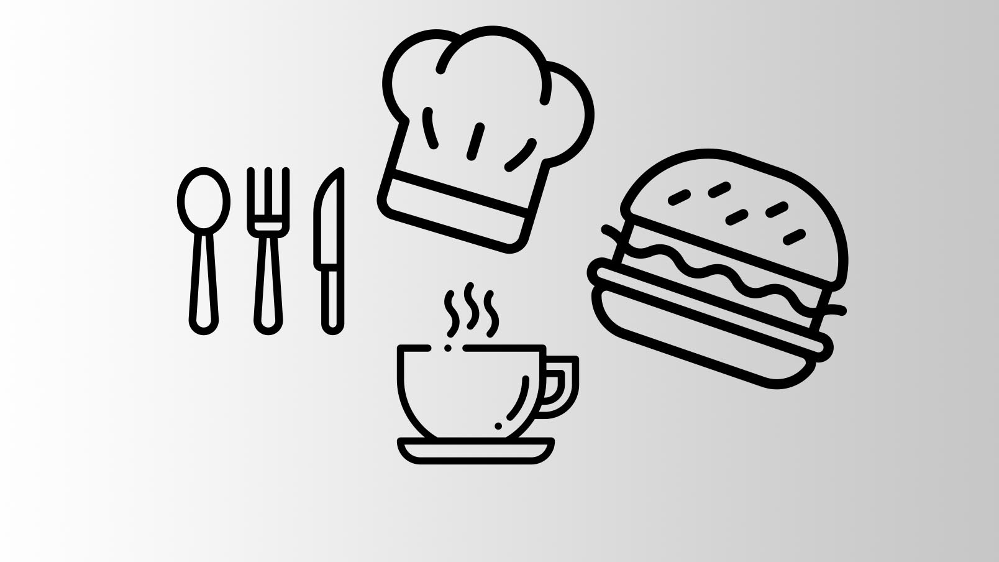

Som studerende er det svært at have råd til det hele. Hvis du gerne vil spare penge som studerende, så hold øje med de mange rabatter der gives til studerende. Rigtig mange steder gives der en rabat, hvis der kan fremvises studiekort. Herunder ses 5 kategorier, hvorunder du kan se nogle steder i Århus, hvor du kan benytte dig af studierabat.
Hvis du gerne vil ud og hygge dig med dine klassekammerater en dag efter skole, måske over en frokost. Så kan du ved Tapashi få 20% rabat mod fremvisning af studiekort. Du kan også på Burger King og Sunset Boulevard får opgraderet din mellem menu til en stor menu. Derudover giver Jensens Bøfhus en rabat på 25% og Bones kører 2 hovedretter for en hovedrets pris hver mandag og torsdag.

Vil du gerne være i form under studie til en fair pris? Hos Motion og Trivsel Risskov, kan du få et abonnement som studerende for 165 kr., om måneden. Du kan også komme helt ned på 29 kr., om ugen ved Repeat, her gælder det dog bare, at træningen foregår mellem kl. 21 – 09. Der er rigtig mange fitness, hvor de har specielle priser til studerende, så undersøg altid det først.

Har du brug for selvforkælelse? Så tag en tur til frisør og spar penge. En hovedregel er at gå efter de lidt mindre frisører, da de ofte er billigere. Hos Mood Frisør får du hele 25% rabat, hos AS Hair Studio får du 15% rabat og hos Treat Me får du 10% rabat.
Trænger du til at komme lidt ud fra dine sædvanlige rammer, uden at bruge en formue. Hos biografkæderne Cinemaxx og Nordisk Film, kan du spare 10-15 kr., på billetter. Det er ikke den helt store besparelse, men hvis vi ser på forskellige museer, så er der ofte gratis adgang eller en rabat mod fremvisning af studiekort. Er du interesseret i teater, kan du også komme en tur i Aarhus Teater for bare 60 kr., mandag – torsdag.
Har du brug for nyt tøj til en af de mange fester, så kan du også her spare penge. Du kan både spare penge i fysiske butikker men også online, hvor den største besparelse ofte ligger. Både Superdry, Message, Companys og Bestseller butikkerne giver 10% rabat mod fremvisning af studiekort. Er du mere til online shopping, er udvalget kun større. Her giver både Asos, Nelly, Zalando, Boozt studierabat. Her ligger rabatten også på omkring 10%.